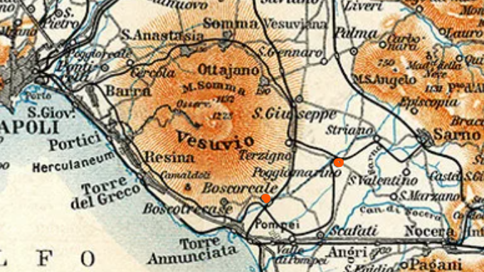
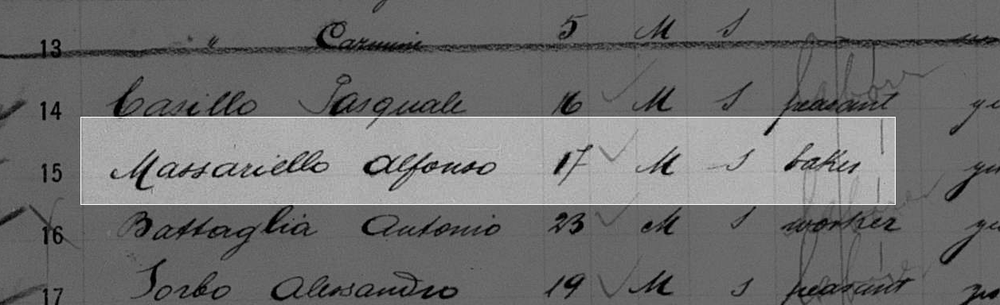
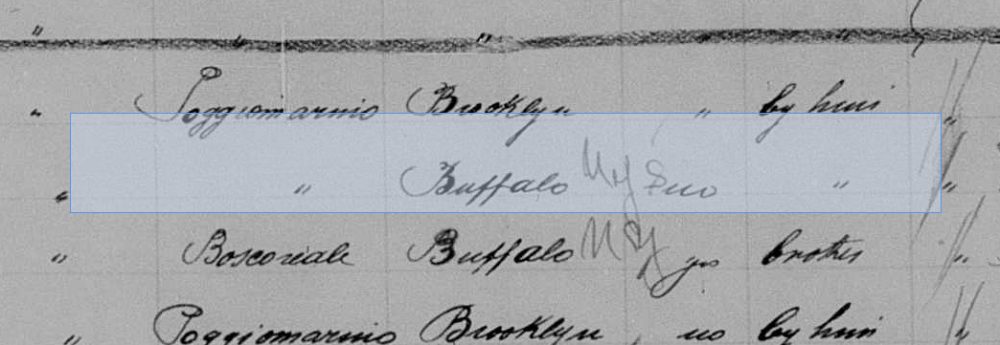
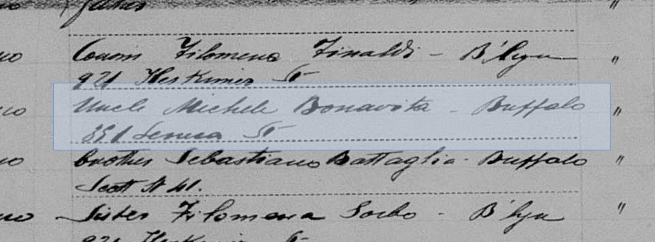
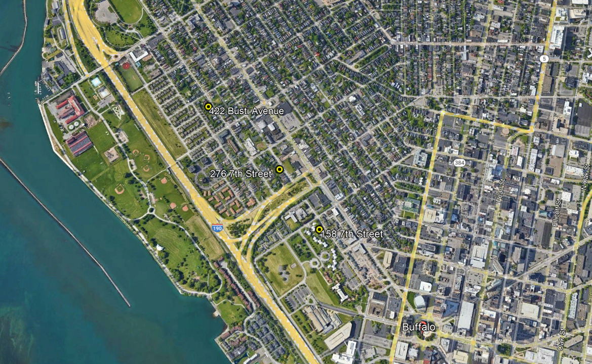
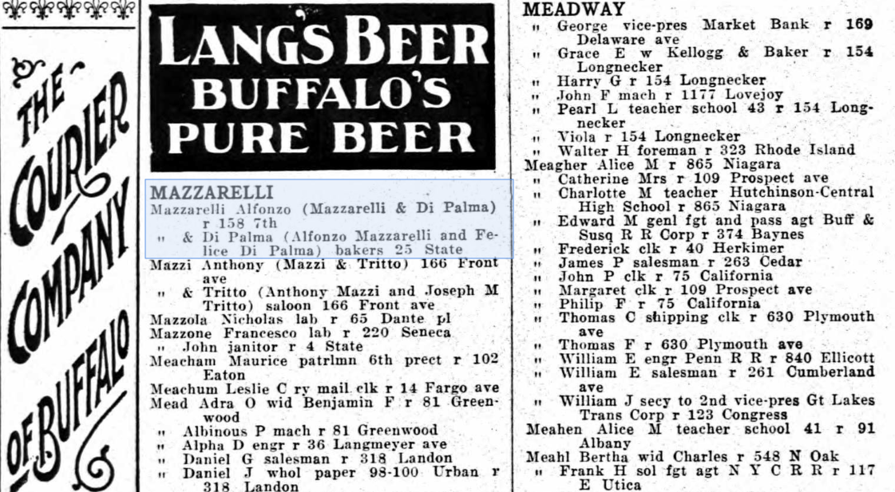
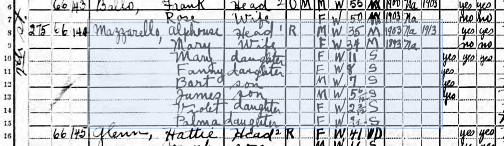
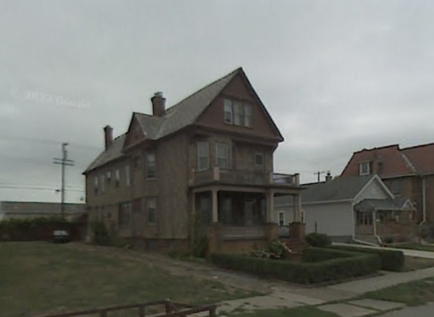

Alfonso was born in Boscoreale on the 27th of April 1884. Boscoreale is part of the greater muncipality of Napels on the southeast side of Mt. Vesuvias. The nearby town of Poggiomarino was also listed on his and other family records as being a place where they were from.

Alfonso left Italy on the 27th of April in 1903 and arrived in New York on the 13 May 1903 on the S.S. Citta di Torino. He was 17 at the time of his arrival in New York and listed his occupation as a baker.
He listed his place of origin as Poggiomarino, Italy.
Michele Bonavita, his uncle, who lived at 851 Seneca St in Buffalo, New York was listed as Alfredo's final destination.

Map of Buffalo with places he lived
1905 - 28 Burwell Place (Now Beak Street)
1915 - 158 7th Street
1916 - Bakery address: Mazzarelli and Felice Di Palma - 25 State Street

1918 - 276 7th Street

1929 - 369 Prospect Avenue
1938 - 422 Busti Avenue (House still exists)
